O projeto consiste no desenvolvimento de um sistema integrado de gestão e ensino, projetado para operar em modalidades online, presencial e híbrida. A solução é composta por dois módulos principais: uma aplicação de gestão interna e uma plataforma de ensino (Web).
O objetivo é criar um ecossistema digital completo que centralize a administração de pessoas (alunos, professores), cursos e turmas em um banco de dados robusto. Este sistema permitirá o gerenciamento completo das aulas online.
A plataforma web conectará Alunos e Professores permitindo que os alunos comprem e assistam aos cursos online, façam quizzes e emitam certificados de conclusão, garantindo uma operação otimizada e uma experiência de aprendizado flexível e de alta qualidade.
Em relação à versão inicial do projeto, que consistia em um protótipo de interface sem persistência de dados, esta versão adota uma arquitetura cliente-servidor. Foram incorporados um serviço de back-end responsável pelas regras de negócio, um banco de dados relacional e um mecanismo de autenticação e autorização de usuários. A Seção 5 detalha essa arquitetura; a Seção 8 delimita o escopo, indicando a situação de cada requisito e as decisões de projeto adotadas.
No universo da engenharia de software e do design de sistemas, o termo "ator" é usado para descrever qualquer entidade externa que interage com um sistema. É um conceito fundamental, pois os atores são a razão pela qual um sistema existe: para servir às suas necessidades. É crucial entender que um ator está sempre fora do sistema; ele não é parte do sistema em si, mas sim alguém (ou algo) que o utiliza ou com o qual ele se comunica.
A plataforma de cursos considerará a interação de dois atores principais, com os seguintes papéis:
Aluno: O ator que consome o conteúdo da plataforma. O seu papel é o de descobrir e adquirir cursos (buscar, filtrar, ver detalhes e comprar). Uma vez inscrito, ele deseja consumir o material de aprendizagem (assistir aulas em vídeo, marcar aulas como concluídas, realizar quizzes e avaliações). O seu perfil é caracterizado também pela interação com a comunidade e com o curso, podendo fazer perguntas nas aulas e ter contato direto com o professor. Ao final, ele pode gerir o seu percurso, emitindo o certificado, avaliando o curso e, ou abrindo tickets de suporte.
Professor / Instrutor: O ator responsável pela criação e gestão do conteúdo pedagógico. Este utilizador tem a função de construir o curso (criar novo curso, adicionar e organizar módulos, fazer upload de vídeos e materiais, definir o preço). Além de criar, ele gerencia ativamente a comunidade de alunos, respondendo a perguntas feitas nas aulas. O seu perfil também é focado na gestão, necessitando aceder a dashboards de desempenho.
No modelo de dados da implementação, o papel do Professor / Instrutor está materializado
como o perfil admin, que concentra as permissões de gestão de catálogo e de conteúdo
descritas acima. O ator permanece sendo o Professor / Instrutor do ponto de vista do
domínio; admin é a denominação técnica do papel na tabela de perfis.
O processo de identificação de requisitos na engenharia de software utiliza, como uma de suas principais técnicas, o artefato denominado Caso de Uso (CDU). Os CDUs consistem em uma sequência de eventos necessários para a concretização de um determinado processo relacionado ao domínio considerado na solução sistêmica a ser desenhada.
Um dos primeiros passos para obtenção de uma visão geral do escopo do sistema a ser desenvolvido consiste na criação de Diagramas de CDUs. Estes diagramas ilustram o conjunto de CDUs para um sistema, os atores e a relação entre os últimos e os primeiros. Neste tipo de diagrama, os CDUs são ilustrados em elipses e os atores como figuras de traço simples (palitos), constando também linhas de comunicação entre ambos, indicando quais atores podem interagir com os CDUs.
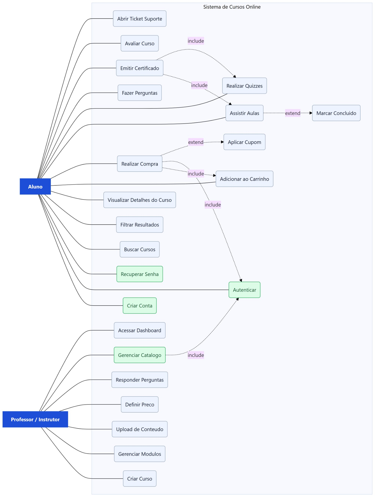
Figura 1 - Diagrama de Casos de Uso da Plataforma de Cursos
Em relação ao diagrama da versão anterior, foram acrescentados os casos de uso Criar Conta, Autenticar e Recuperar Senha, associados ao ator Aluno, e o caso de uso Gerenciar Catálogo, associado ao ator Professor / Instrutor. O caso de uso Realizar Compra passa a incluir Autenticar, uma vez que a matrícula exige um usuário identificado.
Os requisitos do sistema podem ser mais bem detalhados através de Histórias de Usuário (HU). Uma HU consiste em uma ou mais sentenças escritas na linguagem cotidiana ou de negócio do usuário, capturando o que ele precisa ou faz como parte de sua função (VAZQUEZ & SIMÕES, 2016).
Segundo Longo e Silva (2014), uma HU precisa ser simples e objetiva, o que ajuda a reduzir longas documentações e a facilitar a comunicação entre os desenvolvedores e o cliente. As HUs devem estar ligadas a critérios de aceitação, que detalham os requisitos específicos do software, mas esses critérios devem ser breves, contendo poucas sentenças. O critério de aceitação define o funcionamento e as características que são necessárias para atender às necessidades dos usuários finais.
É importante notar que as HUs estarão vinculadas aos Casos de Uso (CDUs) mostrados no diagrama (Figura 1), o que significa que cada CDU no diagrama terá uma HU correspondente.
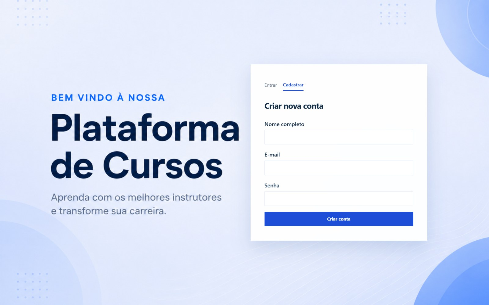
Figura 2 - Interface de Cadastro e Autenticação
Figura 3 - Busca no Catálogo
Figura 4 - Filtro de Busca
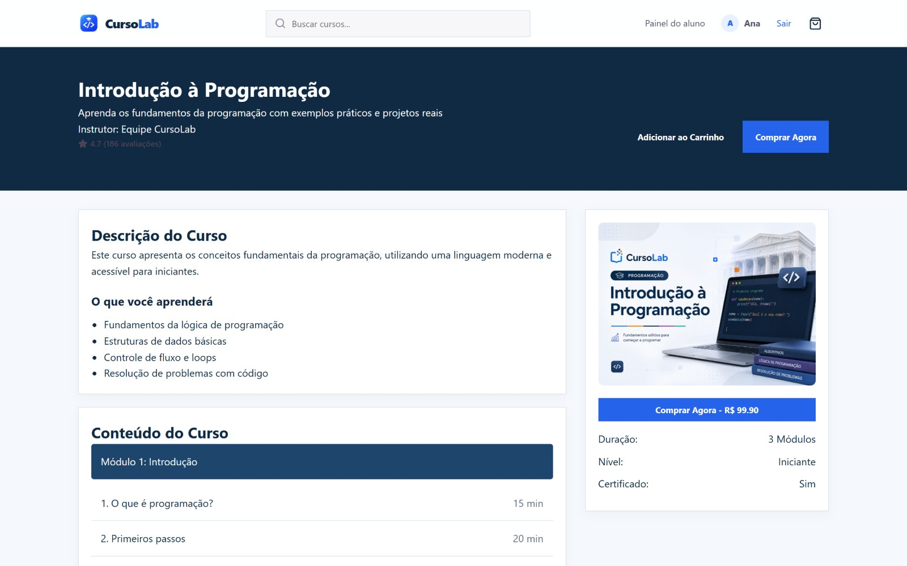
Figura 5 - Página de Detalhes do Curso
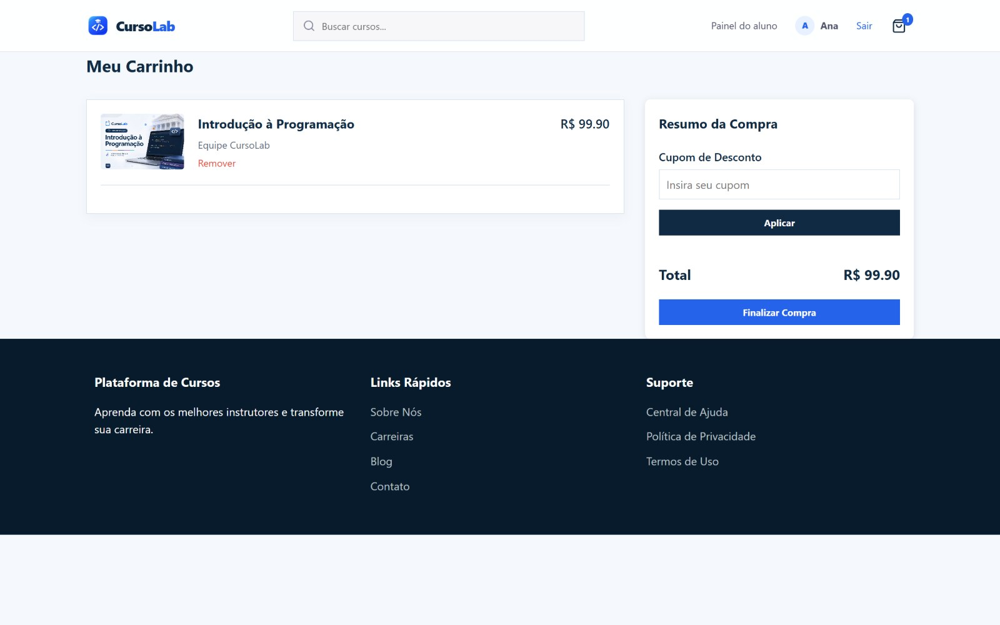
Figura 6 - Página de Compra
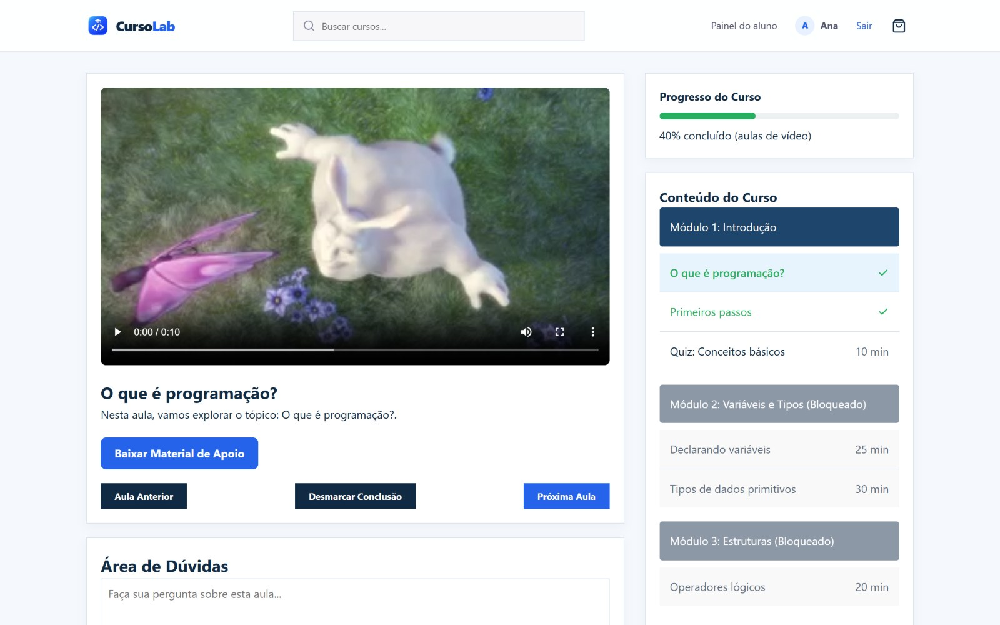
Figura 7 - Interface do Player e Progresso do Curso
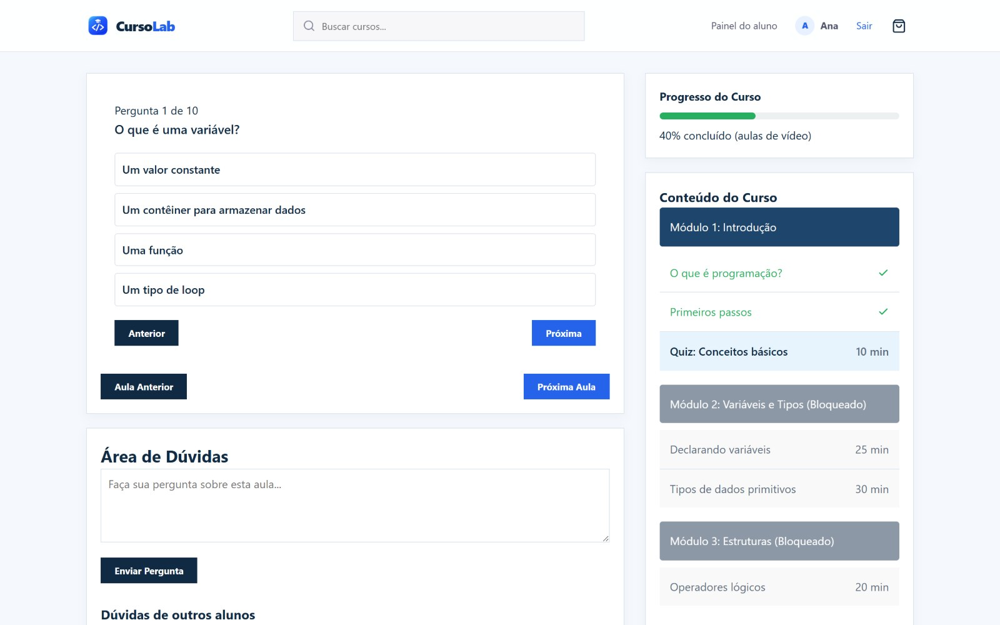
Figura 8 - Interface do Quiz com Pergunta de Múltipla Escolha
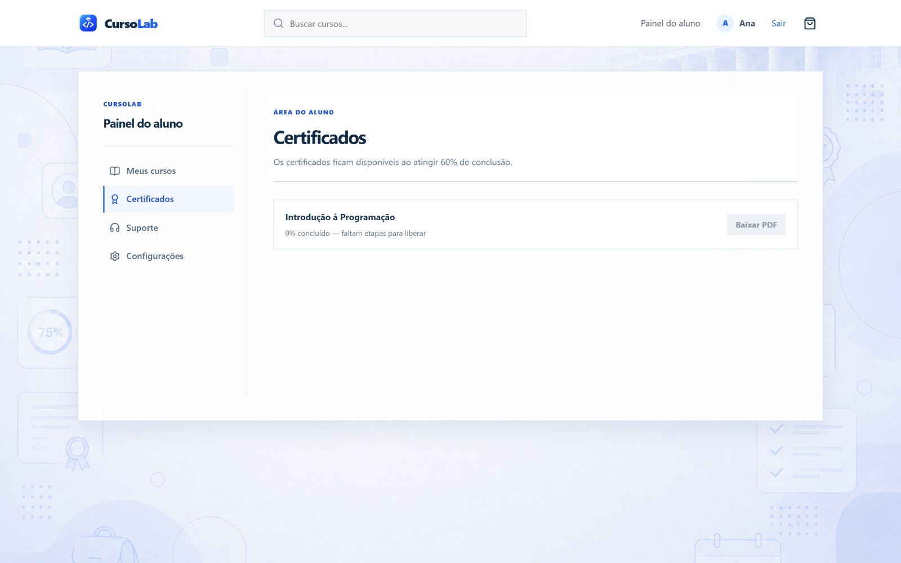
Figura 9 - Interface de Emissão de Certificado
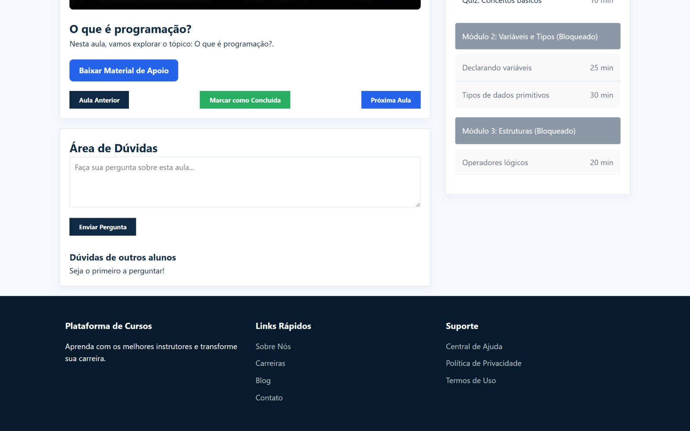
Figura 10 - Interface da Área de Dúvidas
Figura 11 - Interface da Área de Avaliação do Curso
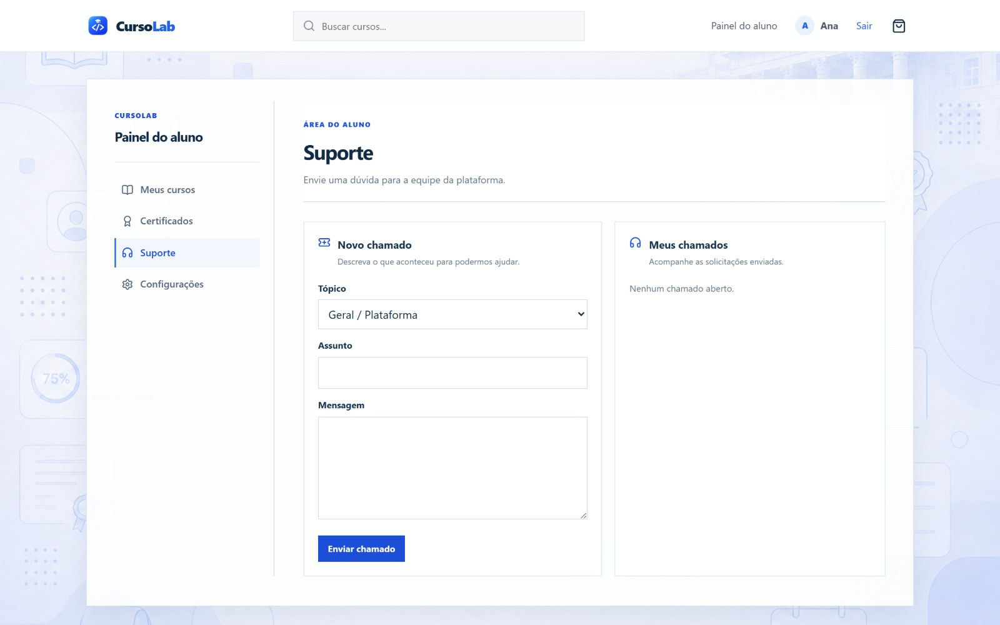
Figura 12 - Área de Suporte
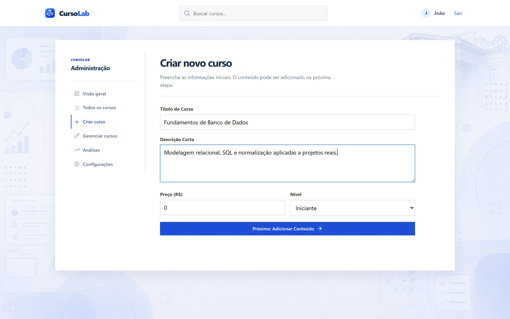
Figura 13 - Área de Criação de Curso
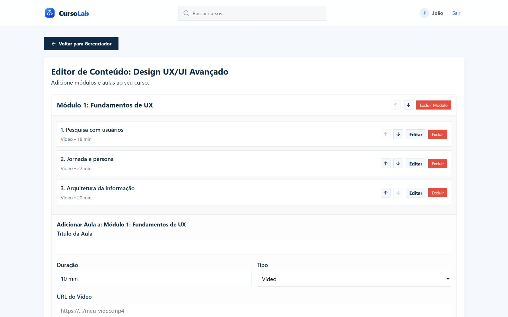
Figura 14 - Interface para Adicionar e Organizar Módulos
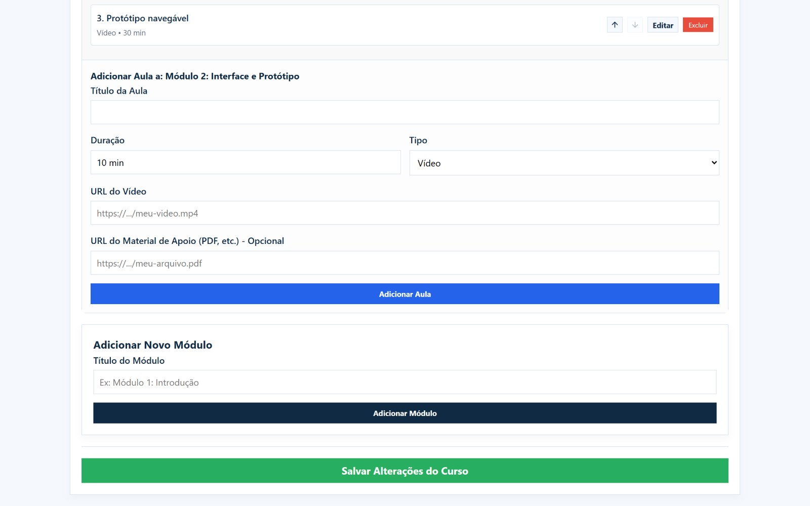
Figura 15 - Área de Upload de Vídeos e Materiais de Apoio
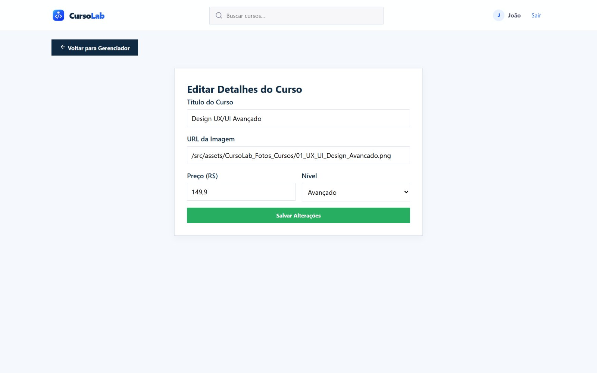
Figura 16 - Área de Definição de Preço de Curso
Figura 17 - Interface do Professor Para Responder Dúvidas
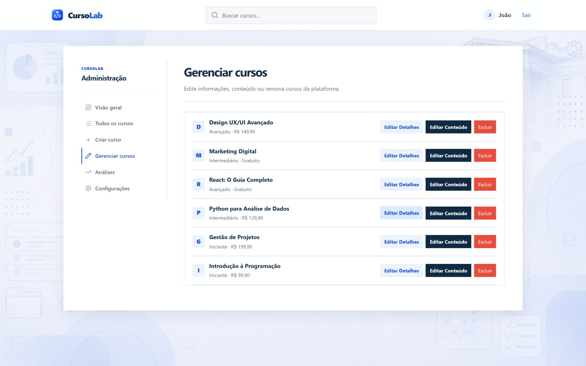
Figura 18 - Interface de Gerenciamento do Catálogo
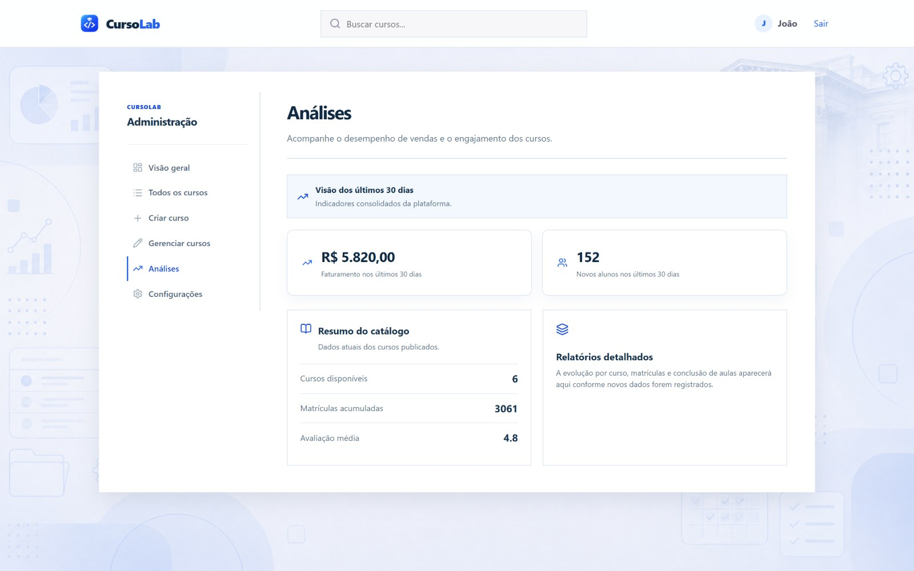
Figura 19 - Dashboard de Desempenho
A versão inicial do projeto era uma aplicação de página única em React, na qual todo o estado residia na memória do navegador. Aquela abordagem era adequada para validar a interface, mas apresentava duas limitações incompatíveis com os requisitos levantados: os dados eram perdidos a cada recarregamento da página e não havia como distinguir usuários, o que inviabilizava associar matrículas, progresso e dúvidas a uma pessoa.
Para atender a esses requisitos, a solução foi reestruturada em três camadas:
React + Vite -> API REST (Express) -> PostgreSQL + Auth + Storage (Supabase)
(cliente) (regras de negócio) (persistência e arquivos)
A autenticação é feita por e-mail e senha através do serviço de autenticação do Supabase,
que emite um token de acesso e um token de renovação. O token de acesso é enviado pelo
cliente no cabeçalho Authorization de cada requisição e validado pelo servidor; quando
expira, o cliente usa o token de renovação para obter um novo sem pedir login outra vez.
O controle de acesso é aplicado no servidor por dois mecanismos encadeados:
requireAuth — rejeita requisições sem token válido, garantindo que apenas usuários
identificados acessem matrículas, progresso, dúvidas, chamados e certificados.requireAdmin — além da autenticação, exige que o perfil do usuário tenha papel de
gestão, protegendo a criação, edição e exclusão de cursos, o envio de arquivos, os
indicadores e a resposta a dúvidas e chamados.Além do papel, várias regras dependem do vínculo do aluno com o curso, também verificado no servidor:
A verificação é feita no servidor, e não na interface. Ocultar um botão no cliente não constitui controle de acesso: um usuário poderia enviar a requisição diretamente à API.
O sistema utiliza duas chaves distintas de acesso ao Supabase. A chave pública é utilizada nas operações de autenticação em nome do usuário. A chave secreta, que ignora as regras de segurança em nível de linha do banco, permanece exclusivamente no ambiente do servidor e nunca é enviada ao navegador. Funções do banco que alteram dados têm a execução revogada para os papéis públicos e liberada apenas para o servidor.
A aplicação é organizada em quatro grandes telas, definidas pelo papel do usuário:
Landing page (pública) -> Login / Cadastro -> Área do aluno | Backoffice (admin)
Telas internas exigem login: um visitante que tente abri-las é direcionado ao login. Ao reabrir o site com uma sessão salva, o usuário vai direto para a sua área.
Vídeos (MP4/WebM, até 50 MB) e materiais de apoio (PDF, documentos, planilhas, apresentações, imagens e ZIP, até 20 MB) ficam em dois buckets do Supabase Storage. O envio não passa pela API: o administrador pede à API uma URL de envio assinada, que valida o tipo e o tamanho do arquivo, e o navegador envia o arquivo diretamente ao Storage. Isso contorna o limite de tamanho das requisições da função serverless e evita que a chave secreta seja necessária no navegador. Links do YouTube e do Vimeo também são aceitos e reproduzidos no player.
O sistema está publicado na Vercel. O frontend é servido como site estático e a API Express roda como função serverless no mesmo domínio, o que dispensa configuração de CORS entre origens diferentes. As chaves do Supabase são cadastradas como variáveis de ambiente do projeto na Vercel.
O desenvolvimento segue um fluxo de branches e Pull Requests: cada funcionalidade é
desenvolvida em uma branch própria, revisada em um Pull Request e integrada à branch
main. Cada integração na main gera automaticamente uma nova versão publicada.
O banco relacional é composto por dez tabelas:
| Tabela | Responsabilidade |
|---|---|
profiles |
Dados do usuário e seu papel (student ou admin) |
courses |
Catálogo de cursos e seus metadados |
enrollments |
Vínculo entre aluno e curso adquirido, com a última aula acessada |
course_modules |
Módulos que compõem a grade de um curso |
lessons |
Aulas de cada módulo, do tipo vídeo ou quiz |
quizzes |
Configuração do quiz, incluindo a nota mínima |
quiz_questions |
Perguntas, alternativas e resposta correta |
lesson_progress |
Registro de conclusão de cada aula por aluno e melhor nota de cada quiz |
lesson_questions |
Dúvidas dos alunos nas aulas e respectivas respostas |
support_tickets |
Chamados de suporte, com status e resposta da equipe |
Complementam o modelo:
save_course_content, que grava módulos, aulas e quizzes de um curso numa
única transação: se algo falhar no meio, nada é alterado. Aulas existentes são
atualizadas no lugar, preservando o progresso e as dúvidas dos alunos ligados a elas.course-videos e course-materials do Supabase Storage (Seção 5.4).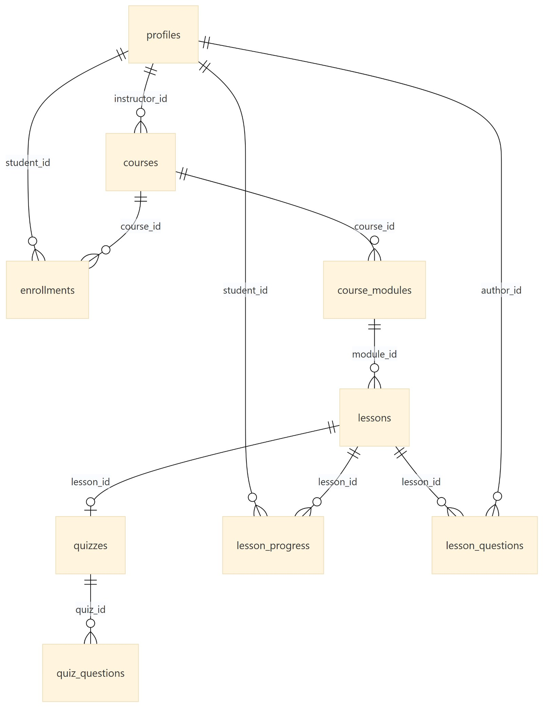
Figura 20 - Modelo de Dados da Plataforma
A comunicação entre cliente e servidor ocorre por uma API REST com 36 rotas, agrupadas por recurso. A coluna "Acesso" indica a proteção aplicada.
| Método | Rota | Acesso | Descrição |
|---|---|---|---|
| GET | /api/health |
Público | Verifica se o servidor está ativo |
| POST | /api/auth/register |
Público | Cadastra um novo aluno |
| POST | /api/auth/login |
Público | Autentica e devolve os tokens |
| POST | /api/auth/refresh |
Público | Renova a sessão com o token de renovação |
| POST | /api/auth/password-recovery |
Público | Envia o e-mail de redefinição de senha |
| POST | /api/auth/recovery-session |
Público | Valida o link de redefinição |
| POST | /api/auth/update-password |
Autenticado | Grava a nova senha (redefinição) |
| POST | /api/auth/change-password |
Autenticado | Troca a senha, confirmando a atual |
| GET | /api/students/me |
Autenticado | Devolve o perfil do usuário |
| PATCH | /api/students/me |
Autenticado | Atualiza o nome do usuário |
| GET | /api/courses |
Público | Lista o catálogo de cursos |
| POST | /api/courses |
Gestão | Cria um curso |
| PUT | /api/courses/:id |
Gestão | Atualiza um curso |
| DELETE | /api/courses/:id |
Gestão | Exclui um curso |
| GET | /api/courses/:id/content |
Conforme o acesso | Grade, aulas ou conteúdo completo (Seção 5.1) |
| PUT | /api/courses/:id/content |
Gestão | Salva módulos, aulas e quizzes numa transação |
| POST | /api/courses/:id/uploads |
Gestão | Gera URL assinada para enviar vídeo ou material |
| POST | /api/courses/:id/modules |
Gestão | Cria um módulo (rota granular, não usada pela interface) |
| POST | /api/modules/:id/lessons |
Gestão | Cria uma aula (rota granular, não usada pela interface) |
| GET | /api/courses/:id/progress |
Autenticado | Aulas concluídas e aula em que o aluno deve continuar |
| PUT | /api/courses/:id/last-lesson |
Autenticado | Registra a última aula aberta pelo aluno |
| PUT | /api/lessons/:id/progress |
Autenticado | Marca ou desmarca a conclusão de uma aula de vídeo |
| POST | /api/lessons/:id/quiz-attempt |
Autenticado | Corrige o quiz no servidor |
| GET | /api/lessons/:id/questions |
Autenticado | Lista as dúvidas da aula |
| POST | /api/lessons/:id/questions |
Autenticado | Envia uma dúvida |
| PATCH | /api/questions/:id/answer |
Gestão | Responde a uma dúvida |
| GET | /api/admin/lesson-questions |
Gestão | Lista as dúvidas de todos os cursos |
| POST | /api/enrollments |
Autenticado | Efetiva a matrícula |
| GET | /api/enrollments/me |
Autenticado | Cursos do aluno com progresso e próxima aula |
| GET | /api/enrollments/:courseId/certificate |
Autenticado | Dados do certificado (100% das aulas e nota final ≥ 70%) |
| POST | /api/support-tickets |
Autenticado | Abre um chamado |
| GET | /api/support-tickets/me |
Autenticado | Lista os chamados do aluno |
| PATCH | /api/support-tickets/:id/close |
Autenticado | O aluno encerra o próprio chamado |
| GET | /api/admin/support-tickets |
Gestão | Lista todos os chamados |
| PUT | /api/admin/support-tickets/:id |
Gestão | Responde ou encerra um chamado |
| GET | /api/admin/analytics |
Gestão | Indicadores consolidados do catálogo |
Esta seção delimita o escopo do sistema, relacionando cada requisito levantado nas Histórias de Usuário à sua situação de implementação. O objetivo é que a documentação descreva o sistema tal como ele é, e não como se pretendia que fosse: um requisito levantado e não implementado continua sendo um requisito válido do projeto, desde que sua ausência esteja registrada de forma explícita.
Está dentro do escopo: a plataforma web de ensino, composta pela landing page, pela área do aluno, pelo backoffice de gestão de catálogo e conteúdo, pela API REST que concentra as regras de negócio, pelo banco de dados relacional e pelo armazenamento de vídeos e materiais.
Está fora do escopo: o módulo de gestão interna presencial mencionado na Seção 1 (administração de turmas, matrículas presenciais e modalidade híbrida), a cobrança real por um meio de pagamento (o checkout é demonstrativo, Seção 8.5) e o envio de notificações por e-mail. O único e-mail enviado é o de redefinição de senha, pelo serviço de autenticação.
Cada requisito é classificado em uma de três situações:
| Situação | Significado |
|---|---|
| Implementado | Funciona de ponta a ponta: interface, API e banco de dados. |
| Parcial | Funciona, mas sem atender a todos os critérios de aceitação da HU. A observação indica o que falta. |
| Não implementado | O requisito não está disponível ao usuário. |
Ator Aluno
| ID | Requisito | HU | Situação | Observação |
|---|---|---|---|---|
| RF01 | Cadastrar-se com nome, e-mail e senha | 4.1.1 | Implementado | |
| RF02 | Autenticar-se e manter a sessão ativa | 4.1.1 | Implementado | Sessão renovada automaticamente |
| RF03 | Solicitar e concluir a redefinição de senha | 4.1.1 | Implementado | |
| RF04 | Consultar o catálogo de cursos | 4.1.2 | Implementado | Catálogo completo na área do aluno; destaques na landing |
| RF05 | Buscar cursos por título ou instrutor | 4.1.2 | Implementado | Resultados atualizados a cada tecla digitada |
| RF06 | Filtrar por nível, faixa de preço e avaliação | 4.1.3 | Implementado | |
| RF07 | Visualizar os detalhes e a grade curricular de um curso | 4.1.4 | Parcial | Sem vídeo de apresentação; descrição gerada da grade |
| RF08 | Adicionar e remover cursos do carrinho | 4.1.5 | Implementado | |
| RF09 | Aplicar cupom de desconto | 4.1.5 | Não implementado | |
| RF10 | Matricular-se, sem duplicar matrícula existente | 4.1.5 | Implementado | Checkout demonstrativo com cartão ou Pix |
| RF11 | Consultar os cursos adquiridos | 4.1.5 | Implementado | |
| RF12 | Assistir às aulas e acessar o material de apoio | 4.1.6 | Implementado | Vídeo enviado, YouTube ou Vimeo |
| RF13 | Marcar e desmarcar a conclusão de uma aula | 4.1.6 | Implementado | |
| RF14 | Ter os módulos liberados conforme a progressão | 4.1.6 | Implementado | |
| RF15 | Responder quizzes e receber a nota imediatamente | 4.1.7 | Implementado | Correção feita no servidor |
| RF16 | Emitir certificado de conclusão em PDF | 4.1.8 | Implementado | Liberado com 100% das aulas e nota final ≥ 70%; nome, carga horária, nota, data e código |
| RF17 | Enviar dúvidas em uma aula | 4.1.9 | Parcial | Sem notificação quando a dúvida é respondida |
| RF18 | Avaliar o curso com nota e comentário | 4.1.10 | Não implementado | |
| RF19 | Abrir e acompanhar tickets de suporte | 4.1.11 | Implementado | Status Aberto, Respondido e Encerrado |
Ator Professor / Instrutor
| ID | Requisito | HU | Situação | Observação |
|---|---|---|---|---|
| RF20 | Criar um curso com título, descrição, preço e nível | 4.1.12 | Parcial | A descrição é gerada a partir da grade |
| RF21 | Criar e organizar módulos de um curso | 4.1.13 | Implementado | Renomear, reordenar e excluir; gravação em transação |
| RF22 | Criar aulas, definindo tipo, duração e materiais | 4.1.14 | Implementado | Envio de vídeos e materiais pelo computador |
| RF23 | Cadastrar quizzes com perguntas e nota mínima | 4.1.14 | Implementado | |
| RF24 | Definir e alterar o preço de um curso | 4.1.15 | Parcial | Sem preço promocional |
| RF25 | Responder às dúvidas enviadas pelos alunos | 4.1.16 | Implementado | Painel de dúvidas pendentes no backoffice |
| RF26 | Editar e excluir cursos do catálogo | 4.1.17 | Implementado | |
| RF27 | Consultar indicadores consolidados do catálogo | 4.1.18 | Parcial | Sem gráfico de inscrições ao longo do tempo |
Requisitos transversais
| ID | Requisito | Situação |
|---|---|---|
| RF28 | Restringir as operações de gestão a usuários com papel de administração | Implementado |
| RF29 | Restringir matrícula, progresso, dúvidas e conteúdo das aulas a usuários com acesso ao curso | Implementado |
| RF30 | Retomar o curso a partir da última aula acessada ("Continue de onde parou") | Implementado |
| RF31 | Permitir ao aluno atualizar o nome e trocar a senha | Implementado |
| ID | Requisito |
|---|---|
| RNF01 | A chave secreta de acesso ao banco permanece exclusivamente no servidor e nunca é enviada ao navegador. |
| RNF02 | O controle de acesso é verificado no servidor, não na interface. |
| RNF03 | A API aceita requisições apenas da origem configurada (o próprio domínio em produção). |
| RNF04 | Senhas devem ter no mínimo 6 caracteres. |
| RNF05 | O token de acesso é transmitido no cabeçalho Authorization e mantido apenas na sessão do navegador. |
| RNF06 | A interface é responsiva, adaptando-se do celular ao computador. |
| RNF07 | A interface é integralmente em português do Brasil. |
| RNF08 | As camadas de apresentação, aplicação e dados são independentes, comunicando-se apenas por HTTP. |
| RNF09 | Operações que alteram várias tabelas ao mesmo tempo (conteúdo do curso) são atômicas. |
| RNF10 | O gabarito dos quizzes nunca é enviado ao navegador do aluno. |
| RNF11 | Arquivos enviados são validados quanto ao tipo e ao tamanho antes do envio. |
A migração do protótipo em memória para a arquitetura cliente-servidor foi concluída: todas as funcionalidades da interface leem e gravam pela API. As decisões abaixo registram como alguns fluxos foram resolvidos.
save_course_content grava tudo numa transação e atualiza as aulas
existentes no lugar, para não apagar o progresso e as dúvidas dos alunos.LONGO, Hugo José; SILVA, Paulo Cesar da. A utilização de histórias de usuários no levantamento de requisitos ágeis. International Journal of Knowledge Engineering and Management, Florianópolis, v. 3, n. 6, p. 1-30, 2014.
VAZQUEZ, Carlos Eduardo; SIMÕES, Guilherme Siqueira. Engenharia de Requisitos: software orientado ao negócio. Rio de Janeiro: Brasport, 2016.